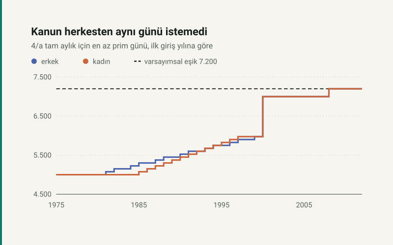

Kısa cevap
Gün eşiği de oran da belli değil. Artışın prim ödeme gün sayısına göre farklılaşması bir yaklaşım olarak dile getirildi; metin Aralık'ta bekleniyor.
Kanun herkesten aynı günü istemedi. 4/a'da tam aylık için aranan gün ilk girişe göre değişiyor: 1999 öncesinde 5.000 ile 5.975, 1999–2008 arasında 7.000, 2008 sonrasında 7.200. 1999 öncesi girişli yaş şartıyla 3.600 günle de bağlanabiliyordu.
Bu kuralla emekli olan kalabalık. 2025 sonunda 4/a'da yaşlılık aylığı alanların 4,27 milyonu (%48,6) 58 (kadın) ve 60 (erkek) yaşın altındaydı. 1999 sonrası girişli, engellilik, maden, erken yaşlanma ve yıpranma gibi özel hükümler dışında, bu yaşta yaşlılık aylığı alamaz. Bu yüzden grubun büyük bölümü 1999 öncesi kurallarla bağlanmış. 7.200 gün şartıyla tam aylık alan ise henüz yok: 1 Mayıs 2008'de giren, yılda 360 gün ödese bile 7.200'e Mayıs 2028'te ulaşır. 7.200 günlük bir eşik, kanunun en azını ödeyip emekli olanı 1.225 ile 2.200 gün geride bırakır.
Gündemde ne var?
Hazine ve Maliye Bakanlığı, 2027 bütçesinin TBMM Plan ve Bütçe Komisyonu'ndaki 5 Kasım oturumunda ek artışın yaş ve prim ödeme gün sayısına göre ayrışmasını doğru bulduğunu söyledi. Komisyon tutanağına göre bu ayrım seyyanen bir artışta da gözetilecek. Gün sınırı, kademe ya da tutar verilmedi. Yaş boyutunu emeklilerin yaş haritası yazısında SGK verisiyle ölçtük. Bu yazı prim gününe bakıyor.
Prim günü ilk bakışta adil bir ölçüt gibi görünür: çok prim ödeyen çok alsın. Ama bir emeklinin dosyasındaki gün sayısı yalnız ne kadar çalıştığını değil, hangi kurala tabi olduğunu da yansıtır.
Emekli olmak için kaç gün gerekti?
4/a (SSK) sigortalısı için tam yaşlılık aylığının gün şartı, ilk sigorta girişinin tarihine bağlı. 1999 öncesinde gün sayısı, kişinin 23 Mayıs 2002'deki sigortalılık süresine göre kademelenir: o tarihte süresi uzun olan daha az gün öder.
| İlk giriş | En az gün | Dayanak |
|---|---|---|
| 1999 öncesi, tam aylık (EYT) | 5.000–5.975 | 506 s.K. Geçici m.81/B; yaş şartı Geçici m.95 ile kalktı |
| 1999 öncesi, yaştan aylık | 3.600 | 506 s.K. Geçici m.81/C; 15 yıl ve yaş |
| 8 Eylül 1999 – 30 Nisan 2008 | 7.000 | 5510 s.K. Geçici m.9/1; kadın 58, erkek 60 yaş (ya da 25 yıl ve 4.500 gün) |
| 1 Mayıs 2008 ve sonrası | 7.200 | 5510 s.K. m.28/2; kadın 58, erkek 60 yaş, 2036'dan sonra kademeli 65 |
8 Eylül 1999'da şart bir günde 1.025 gün arttı
İlk giriş yılına göre tam aylığın aradığı en az gün (her yılın 1 Haziran girişi). Kesikli çizgi varsayımsal bir 7.200 gün eşiği.
Erkekte 1980'den önce girenler 5.000 günle, 1999'da 8 Eylül'den önce girenler 5.975 günle tam aylığa hak kazanıyor. 8 Eylül 1999'da sınır 7.000 güne sıçrıyor, 2008 Mayıs'ında 7.200'e çıkıyor. 4/b'de (Bağ-Kur) 1999 öncesinin tam aylık şartı gün değil tam yıl: kadın 20, erkek 25 yıl, yani 7.200 ve 9.000 gün.
Bu kurallarla emekli olan kaç kişi?
SGK prim gününe göre emekli dağılımı yayımlamıyor. Ama yaş tablosundan bir alt sınır çıkarılabilir. 1999 sonrası girişlinin yaşlılık aylığı için en erken yaşı kadında 58, erkekte 60. 2025 sonunda bu yaşların altında aylık alan biri, özel hükümler (engelli sigortalı, yeraltı maden, erken yaşlanma, fiili hizmet zammı) dışında, 1999 öncesi kurallarla bağlanmış olmalı.
| Kapsam | Erkek | Kadın | Toplam | Kapsam içindeki payı |
|---|---|---|---|---|
| 4/a (SSK) | 3.476.975 | 789.615 | 4.266.590 | %48,6 |
| 4/b (Bağ-Kur) | 308.982 | 43.665 | 352.647 | %19,7 |
Bu bir tahmin ve iki yöne sapar. Özel hükümlerle erken bağlananlar sayıyı büyütür. 1999 öncesi girişli olup 2025'te 58/60'ı geçmiş emekliler ise aynı kurallarla bağlandığı hâlde tabloda ayırt edilemez ve sayıyı küçültür. Yine de 4/a yaşlılık aylıklarının yaklaşık yarısı, emekli olmak için 7.200'den az gün isteyen bir kurala tabiydi; geri kalanın çoğu da 7.000 günlük 1999–2008 kuralına.
4/b satırı ters okunur: 1999 öncesi Bağ-Kur'lunun tam aylık şartı kadında 7.200, erkekte 9.000 gündü. Bu grup 7.200 günlük bir eşiği kanun gereği zaten geçmiş olur.
Gün eşiği koyan bir kural ne yapar?
Örnek olsun diye varsayımsal bir kural: 7.200 günü aşana ek artış, altında kalana yok. 7.200 bugün 4/a için tam aylığın şartı, o yüzden akla ilk gelen sınır. Kanunun en azını ödeyip emekli olan biri bu eşiğe göre şöyle durur:
| İlk giriş | En az gün | Eşiğe uzaklık |
|---|---|---|
| 1980 öncesi, erkek | 5.000 | −2.200 |
| 1999 başı, erkek | 5.975 | −1.225 |
| 1999 öncesi, yaştan aylık | 3.600 | −3.600 |
| 1999–2008 | 7.000 | −200 |
| 2008 sonrası | 7.200 | 0 |
Gerçek emekliler en azla sınırlı değil; çoğu fazlasını ödedi. Ama kural, aynı kariyeri farklı yıllarda başlatan iki kişiyi farklı ödüllendirir. Erken girenin kanunen eksik ödediği gün yoktur; şart böyle konmuştu.
Eşik yerine her 360 gün için ek tutar veren kademeli bir kural da düşünülebilir. Onun da maliyeti dışarıdan hesaplanamaz: prim gününe göre emekli sayısı yayımlanmadığı için hangi kademede kaç kişi olduğu bilinmiyor. Yaş için bu hesap yapılabiliyor; prim günü için yapılamıyor.
Prim günü aylığın içinde zaten var
Bugünkü formül prim gününü zaten ödüllendiriyor: 2008 sonrası sigortalıda her 360 gün bağlama oranına 2 puan ekler. Prim gününe göre bir ek artış bu ödülü ikinci kez verir. Ancak yalnız aylığı en düşük aylığın üstünde olana; tabandakinde fazladan gün bugün de ödenen aylığı değiştirmiyor. Ayrıntısı bir yıl daha çalışmak yazısında.
Kısacası prim günü kuralının sonucu üç seçime bağlı: eşik mi kademe mi, ek artış kendi aylığa mı ödenen aylığa mı uygulanır, ve 1999 öncesi kuralla emekli olanın günü kendi şartıyla mı yoksa bugünkü 7.200 ile mi karşılaştırılır. Metin geldiğinde bakılacak yer bu üçü.
Varsayımlar ve sınırlar
- Gün eşiği örneği varsayımsaldır; açıklanmış bir sınır değil.
- Gün şartları 4/a tam yaşlılık aylığı içindir. Grafik her yılın 1 Haziran girişini ve girişte 20 yaşı varsayar. 18 yaşından önce başlayanda süre 18. yaştan sayılır ve satır kayabilir.
- Yaş sınırının altında aylık alanlar bir tahmindir. Engelli sigortalı, yeraltı maden, erken yaşlanma ve fiili hizmet zammı hükümleriyle erken bağlanan 1999 sonrası girişliler ayrılamaz (sayıyı büyütür); 58/60'ı geçmiş 1999 öncesi girişliler de ayrılamaz (küçültür).
- Kendi emeklilik tarihiniz ve gün şartınız için ne zaman emekli olurum aracına bakın.
Kaynaklar
- TBMM Plan ve Bütçe Komisyonu tutanağı, 5 Kasım 2026, s.74 (incelenmemiş tutanak)
- 506 sayılı Kanun Geçici m.81: mevzuat.gov.tr
- 5510 sayılı Kanun m.28, Geçici m.9 ve Geçici m.95: mevzuat.gov.tr
- SGK İstatistik Yıllığı 2025, Tablo 2.7 ve 2.21 (16 Kasım 2026'da indirildi)
- Hesap: sitenin emeklilik tarihi çekirdeği, ne zaman emekli olurum
Sık sorulan sorular
Emekli zammı prim gününe göre mi verilecek?
Karar yok. 5 Kasım 2026'daki Komisyon oturumunda artışın yaş ve prim ödeme gün sayısına göre ayrışmasının doğru olacağı söylendi. Gün sınırı ve tutar açıklanmadı.
EYT'li kaç günle emekli olabiliyordu?
4/a'da 1999 öncesi girişli tam aylık için 5.000 ile 5.975 gün; sayı 23 Mayıs 2002'deki sigortalılık süresine göre değişir. 15 yıl ve yaş şartıyla 3.600 günle de bağlanılabiliyordu.
Prim gününe göre kaç emekli var?
SGK bu dağılımı yayımlamıyor. Bu yüzden prim gününe bağlı bir artışın maliyeti dışarıdan hesaplanamaz. Yaş tablosundan çıkan tahmin: 4/a'da 4.266.590 kişinin büyük bölümü 1999 öncesi kurallarla bağlanmış.